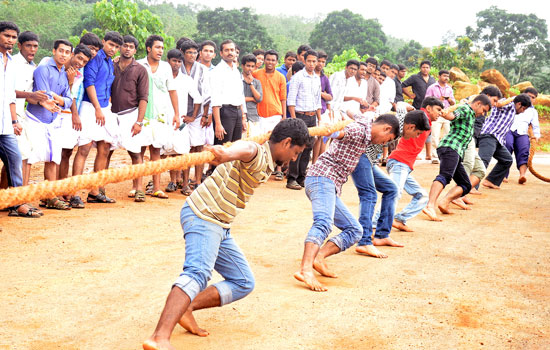

|
Pookalam is an intricate and colourful arrangement of flowers laid on the floor. Tradition of decorating Pookalam is extremely popular in Kerala and is followed as a ritual in every household during ten-day-long Onam celebrations.Various flowers are used on each day as a specific flower is dedicated to each day of Onam. Commonly used flowers include Thumba (Lucas Aspera), Kakka Poovu, Thechipoovu, Mukkutti (little tree plant), Chemparathy (shoe flower), Aripoo or Konginipoo (Lantana), Hanuman Kireedom (Red pagoda plant) and Chethi (Ixora). |
 |
Puli Kali is a colorful recreational folk art from the state of Kerala. It is performed by trained artists to entertain people on the occasion of Onam, an annual harvest festival, celebrated mainly in the Indian state of Kerala. On the fourth day of Onam celebrations (Nalaam Onam), performers painted like tigers and hunters in bright yellow, red, and black dance to the beats of instruments like Udukku and Thakil. Literal meaning of Pulikali is the 'play of the tigers' hence the performance revolve around the theme of tiger hunting. |
|
Thiruvathirakali, also known as Kaikottikkali, is a very popular group dance of Kerala. Thiruvathirakali is performed by the women of Hindu community, often during festive seasons like Onam and the Thiruvathira day in the Malayalam month of Dhanu (December- January). Performed by maids in order to attain everlasting marital bliss, Thiruvathirakali is a simple and gentle dance with the lasya element or the amorous charm predominating. |
|
|  |
Vadam Vali is a traditional game played by both men and women during the Onam festival. In this team event each team works to show their strength and unity by pulling their opponents across the center line. |